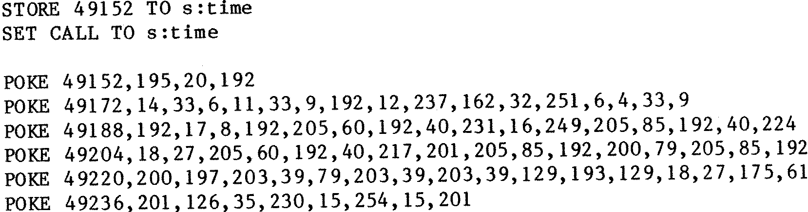

80-Bus News |
September–October 1984 · Volume 3 · Issue 5 |
| Page 36 of 47 |
|---|
Ok, now on to clocks and dBASE. The same process is used, just the programs are different. Firstly the clock call routine for the GM816, this is likely to be the more popular. I don’t include any utilities for setting the clock as both the GM816 and the GM822 are sufficiently reliable to only require setting every now and then by separate utilities described in their respective manuals.
See Listing Three
This lot comes down to a neat and tidy little piece so:
Note that in this routine the 11 registers are first read into an 11 byte workspace, the results are then converted from the decimal one byte per digit into HEX numbers in a second workspace, as dBASE requires the numbers stored in HEX. It is then a simple matter of PEEKing the workspace to extract the time and date. The order is thus:
sitimet3 = month
sitimet4 = day of week
sitimet5 = day of month
sitimet6 = hours
sitimet7 = minutes
sitimet8 = seconds
Listing Four is an extract from my radio logbook program which firstly shoves the correct time at the SVC and then picks up a logon string for later use. This is for the GM816. The same is true for the GM822 hung on a PIO device. The routine is quite a bit larger, but the output format is the same. In this instance the port decode was 1ch – 1fh, if you want it any different, then you can unscramble it and disassemble it yourself. See Listing Five.
Naturally these routines could be used with any high level language which has the ability to PEEK and POKE and to CALL user subroutines. The principles are the same regardless, but care should be taken as to where they are put as some parts of programs could crash into them if they are located at c000h, or worse, they could be moved by the program itself.
| Page 36 of 47 |
|---|